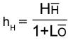
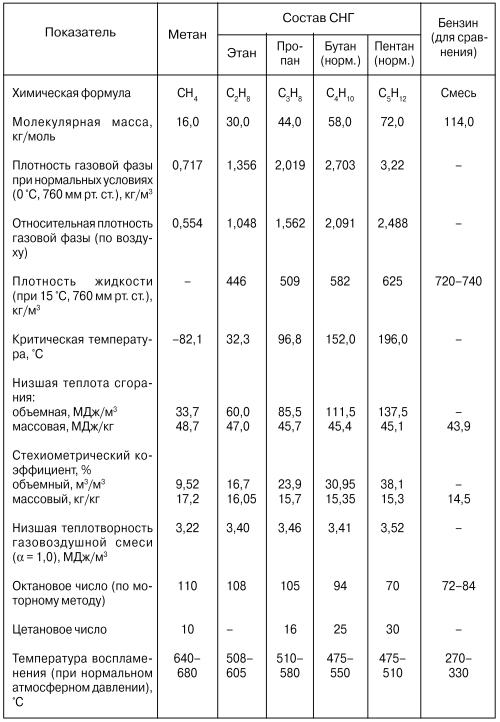
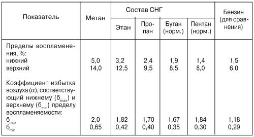

Виды газового топлива О преимуществе газа, как топлива, перед бензином.
Автомобильный парк нашей страны значительно вырос за последние годы и его увеличение продолжается.
Связанный с этим рост потребления жидкого топлива на транспорте сопровождается истощением хорошо освоенных и удобно расположенных нефтяных месторождений, вследствие чего приходится осваивать новые, расположенные в труднодоступных районах. Это, в свою очередь, приводит к удорожанию как сырой нефти, так и получаемых из нее нефтепродуктов.
Между тем страна располагает большими запасами высококачественного моторного топлива, не требующего для использования в двигателях никакой химической переработки. Речь идет о природном газе. Как моторное топливо, природный газ в натуральном виде превосходит нефтяное топливо. При использовании его обеспечиваются высокие технико-экономические показатели в ДВС, так как природный газ имеет хорошие антидетонационные качества, создает благоприятные условия смесеобразования и обладает широкими пределами воспламенения в смеси с воздухом. По-видимому, по этой причине первые ДВС делались для работы именно на газе.
В конце 40-х и начале 50-х годов в СССР было освоено производство газобаллонных автомобилей, использовавших сжатый природный газ. Несколько тысяч таких автомобилей в течение нескольких лет эксплуатировались в Украине и Поволжье – районах, достаточно обеспеченных в то время природным газом.
Однако начальный уровень газоснабжения и относительно малый в то время объем добычи газа не позволили расширить применение газобаллонных автомобилей, а возросшая потребность других отраслей промышленности (например, по производству удобрений), не обеспеченных приростом добычи, привела, в конечном итоге, к прекращению выпуска таких машин и изъятия их из эксплуатации.
В настоящее время положение в корне изменилось. Отдельные магистральные газопроводы давно объединены в Единую Систему Газоснабжения, которая густой сетью покрывает всю европейскую часть России, Среднюю Азию, Приморский край и остров Сахалин. И газификация продолжается бурными темпами.
Таким образом, имеется комплекс факторов – от высоких качеств природного газа, как моторного топлива, до эффективного уровня развития Единой Системы Газоснабжения – определяющих широкие перспективы применения газового топлива на транспорте.
Косвенным подтверждением целесообразности использования природного газа в качестве топлива для ДВС служит широкое использование его в Италии, США, Японии, ФРГ, Канаде, Нидерландах и т. д.
Горючие газы, применяемые в качестве моторного топлива для автомобилей, можно условно разделить на три основных вида по условиям специфики содержания, влияющей на возможность использования на разных классах автомобилей (легковых, грузовых, автобусов):
1. Сжиженные нефтяные газы (СНГ).
2. Компримированные (сжатые) природные газы (КПГ).
3. Сжиженные природные газы (СПГ).
Сжиженные нефтяные газы при нормальных температурах (в диапазоне от –20 °C до +20 °C) и относительно небольших давлениях (1,0...2,0 МПа – 10...20 кгс/см2) находятся в жидком состоянии. Их основные компоненты – этан, пропан, бутан и весьма близкие к ним непредельные углеводороды – этилен, пропилен, бутилен и их изомер. Эти газы получаются при добыче и переработке нефти и поэтому их называют сжиженные нефтяные газы (СНГ). Комплект газового оборудования для СНГ вместе с баллоном весит от 40 до 60 кг и вполне подходит для установки на легковых автомобилях. Объем баллона обеспечивает пробег около 300 км, что вполне соизмеримо с расчетным пробегом 400 км для автомобиля, работающего на бензине.
Компримированные (сжатые) природные газы (КПГ) при нормальных температурах и любых высоких давлениях находятся в газообразном состоянии. К таким газам относятся метан, водород и др. Наибольший интерес для использования в качестве горючего на автомобильном транспорте представляет метан. Он является основной частью добываемых природных газов и составной частью биогаза, получаемого в результате брожения различных канализационных отходов.
Главным недостатком природного газа, как моторного топлива, является очень низкая объемная концентрация энергии. Если теплота сгорания одного литра жидкого топлива равна, примерно, 31 426, то у природного газа при нормальных условиях она равна 33,52–35,62 кДж, т. е. почти в 1000 раз меньше. По этой причине для использования газа в качестве моторного топлива на транспортном средстве его надо предварительно сжать до высоких давлений 20–25 МПа и более и заполнить им специальные баллоны.
Для хранения газа под таким давлением выпускаются баллоны из углеродистых и легированных сталей на давление 15–32 МПа. Каждый баллон в незаполненном состоянии весит более 100 кг. Использование их на легковом автомобиле не рационально, так как их вес соизмерим с возможной полезной нагрузкой.
В связи с этим их используют на грузовых автомобилях и автобусах.
Однако, несмотря на то, что применяемые в современной практике баллоны пока тяжелы, они полностью обеспечивают среднесуточный пробег автомобиля и могут применяться повторно при списании автомобиля. В некоторых отраслях техники, применяются армированные пластмассовые сосуды, которые легче стальных в 4–4,5 раза. В этом случае массовый показатель хранения КПГ, хотя и остается ниже, чем у бензина, но отличается от него на величину, малосущественную в практике. Но они очень дороги.
Сжиженные природные газы (СПГ) имеют такое же происхождение и состав, как и компримированные природные газы. Они получаются охлаждением метана до минус 162 °C. Хранятся в теплоизолированных емкостях.
Независимо от качества теплоизоляции газосодержащих емкостей (сосуды Дюара), температура в них повышается, а следовательно, этот способ содержания газового топлива может быть использован при интенсивной эксплуатации транспортного средства и его безгаражном хранении, так как периодически требуется сброс давления, т. е. выпуск порции газа.
При переводе автотранспорта на СПГ его низкую температуру возможно использовать для компенсации потерь мощности или кондиционирования воздуха в салоне автомобиля.
Переоборудование автомобиля для работы на СПГ заключается в установке специальной криогенной емкости, небольшого испарителя, использующего тепло выпускных газов, и монтаже газовой топливной аппаратуры, которая аналогична применяемой на газобаллонных автомобилях при работе на КПГ. Затраты на получение СПГ в 2–3 раза больше, чем на получение КПГ. Поэтому сжиженный природный газ целесообразно применять на автомобилях-рефрижераторах, где он может выполнять дополнительные функции хладагента для холодильников и кондиционеров.
Исходя из вышеизложенного и учитывая, что в книге рассматривается газовое оборудование для легковых и малотоннажных грузовых автомобилей, основное внимание мы уделим двум первым видам газового топлива и устройствам, обеспечивающим их работу на двигателях внутреннего сгорания (ДВС).
Что нам ожидать от газового топлива?
Для ответа на этот вопрос рассмотрим основные физико-химические показатели газовых топлив, а также их влияние на эксплуатационные качества двигателя в сравнении с аналогичными характеристиками бензина.
Познакомим с величинами, их характеризующими.
1 Низшая теплота сгорания (HH, МДж/кг или МДж/м3) характеризует энергетические свойства газа и показывает, какое наименьшее количество теплоты может выделиться при полном сгорании единицы массы или объема.
2 Стехиометрический (массовый или объемный) коэффициент (L0 кг/кг или м3/м3) характеризует количество воздуха, теоретически необходимого для полного сгорания единицы массы или объема газа.
3 Низшая теплотворность горючей смеси (hH МДж/кг или МДж/м3) характеризует содержание тепловой энергии в единице массы ли и объема горючей смеси стехиометрического состава.
Названные показатели связаны между собой соотношением:

4. Плотность (Р, кг/м3) представляет собой массу, заключенную в единице объема газа в жидкой или газообразной его фазе при определенных внешних условиях (температуре и давлении).
5. Октановое число (ОЧ) характеризует антидетонационные свойства газа и служит критерием для установления допустимой степени сжатия двигателя. ОЧ газовых топлив лежит в пределах 70?110. Чем выше ОЧ газа, тем он менее склонен к детонационному сгоранию и тем выше допустимая степень сжатия двигателя и, следовательно, его экономичность.
6. Цетановое число (ЦТ) характеризует воспламеняемость газа: чем оно ниже, тем хуже происходит воспламенение газа и, следовательно, ухудшаются пусковые свойства двигателя на этом газе.
Октановое и цетановое числа связаны между собой линейной зависимостью: чем выше ОЧ, тем ниже ЦТ.
7. Пределы воспламеняемости газа характеризуют граничные значения содержания газа (в процентах по объему) в воздухе, при которых еще возможно воспламенение горючей смеси. На воспламеняемость газовой смеси оказывают влияние температура, давление и ее турбулентность (завихрение газовых потоков). Переобедненные и переобогащенные газовые смеси не воспламеняются.
Знание этих пределов важно как для организации рабочего процесса и регулирования топливоподачи в двигателях, так и для определения взрыво– и пожаробезопасности концентраций и соответствующего обустройства помещений для хранения и технического обслуживания автомобилей.
8. Критическая температура (Ткр) – температура, при которой плотности жидкости и ее насыщенного пара становятся равными и граница раздела между ними исчезает.
9. Давление насыщенных паров (Ркр) при критической температуре называется критическим давлением.
При температуре выше критической вещество может находиться только в газообразном состоянии независимо от внешнего давления.
Знание критической температуры очень важно для оценки газовых топлив и их классификации.
Рассмотрим таблицу с точки зрения сравнения физико-химических показателей газа и бензина как топлив для ДВС.
Таблица 1. Физико-химические показатели основных углеводородных газов, входящих в состав газовых топлив


* Расшифровка показателей и таблица 1 взяты из справочника «Газобаллонные автомобили», авторы А. И. Морев, В. Н. Ерохов, Б. А. Бекетов и др. – М.: «Транспорт», 1992.
Первый показатель в таблице – химическая формула. Метан и сжиженный нефтяной газ, в состав которого входят этан, пропан, бутан и пентан, ни в своем составе, ни в примесях не имеют свинца, что делает выхлоп при их сгорании экологически более чистым, чем у бензина.
Молекулярная масса у газов ниже, чем у бензина, следовательно, наполнение цилиндров горючей смесью, при прочих равных условиях, будет ниже, чем у бензина. Это минус, так как ведет к снижению мощности ДВС.
Относительная плотность газовой фазы по воздуху – величина, необходимая для расчета механизмов смесеобразования рабочего тела (газовоздушной смеси) и непосредственно не характеризует преимущества, или недостатки газового топлива перед бензином, но говорит о том, что при утечке метан будет уходить вверх, а СНГ будет скапливаться внизу.
Плотность жидкости – характеризует объем сосуда для хранения жидкой фазы топлива. Мы видим, что для одной и той же массы для бензина нужен объем меньше, чем для газа. Это – минус.
Критическая температура. Углеводородные газы, имеющие критическую температуру значительно выше обычных температур окружающей среды (например, у пропана 96,8 °C, а у бутана – 152,0 °C), легко сжижаются и хранятся в сжиженном состоянии при относительно небольшом давлении. Они хранятся в достаточно легких емкостях, позволяющих их использовать для питания двигателей легковых и малотоннажных грузовых автомобилей.
А метан, у которого критическая температура значительно ниже (минус 82,1 °C), будет при любом давлении в газообразном состоянии, и для его использования в качестве газового топлива его содержат в баллонах под давлением 20 МПа.
Низшая теплота сгорания у всех газов больше, чем у бензина. Это является преимуществом газового топлива и компенсирует пониженное наполнение цилиндров из-за малой относительной плотности газа.
Стехиометрический коэффициент у газов выше, чем у бензина.
Октановое число у газа значительно выше, чем у бензина. Это большое преимущество газа, позволяющее избавить двигатель от детонации, увеличить его мощность за счет увеличения степени сжатия и снизить расход топлива.
Температура воспламенения. Не в пользу газа. Это ухудшит пусковые качества двигателя.
Пределы воспламеняемости и коэффициент избытка воздуха в пользу газового топлива. Они говорят о том, что пределы регулирования ДВС на газовом топливе шире, чем на бензиновом.
На основе рассмотренных физико-химических свойств газовых топлив можно утверждать, что они безусловно превосходят бензиновые по следующим параметрам:
– позволяют добиваться более высоких мощностных и топливно-экономических показателей, чем у аналогичных по способу организации рабочего процесса бензиновых двигателей. Специально сконструированные газовые двигатели по удельным показателям мощности превосходят бензиновые, а по топливной экономичности близки к дизельным;
– по экологическим показателям выхлопа значительно превосходят бензины.
Очень ярким доказательством преимущества применения газового топлива перед бензиновым является опыт работы в этом направлении в газовой промышленности. Вот как оценивают опыт применения газового топлива в книге «Природный газ как моторное топливо на транспорте» (издательство «Недра», 1986 год) авторы Ф. Г. Гайнуллин, А. И. Грищенко, Ю. Н. Васильев, Л. С. Золотаревский.
«Обобщение и анализ многолетнего опыта эксплуатации газовых двигателей на различных объектах газовой промышленности, выполненные ВНИИГАЗом, свидетельствуют о том, что при переходе с жидкого топлива на газообразное срок службы двигателя до капитального ремонта возрастает в 1,5 раза, а сроки смены масла увеличиваются в 2 раза...
Достаточно отметить, что коэффициент полезного действия газовых двигателей зe достигает 38–40 % в широком диапазоне режимов. Для сравнения укажем, что зe бензинового двигателя составляет лишь 30–35 % и только на наиболее экономичных режимах работы...
Особенно усложнено приготовление смеси для бензиновых двигателей при низких температурах атмосферного воздуха вследствие того, что бензин в этих условиях плохо испаряется. При газовом топливе приготовление равномерной смеси не вызывает труда...
Отмечается, что токсичность выпускных газов при работе на природном газе на 90 % ниже токсичности выпускаемых газов бензиновых двигателей...
Перевод двигателей на КПГ вместо бензина обеспечил снижение содержания в выпускных газах окиси углерода с 1,3 до 0,13 %, углеводородов с 221 до 88 млн. долей, а окислов и соединений азота с 1000 и более до 100–200 млн. долей. Помимо улучшения экологии использование КПГ в автомобильных двигателях увеличивает срок службы свечей до 85 тыс. км... нет испарения топлива, не образуются паровоздушные пробки в топливоподающей системе, обеспечиваются: устойчивая работа на холостом ходу, хорошая приемистость и пожаробезобасность.
В настоящее время в всем мире эксплуатируется свыше 400 тыс. газобаллонных автомобилей, работающих на КПГ. Самое большое число газобаллонных автомобилей на КПГ, в основном легковых (270 тыс. шт.), эксплуатируется уже несколько десятков лет в Италии...
По данным фирмы «Ford» (США), мощность автомобильного двигателя, работающего на СПГ после 55 тыс. миль пробега, была на 10 % выше, чем аналогичного, работавшего на бензине (соответственно 74 и 66 кВт), а содержание окиси углерода в отработавших газах двигателей на СПГ было в 5 раз ниже (соответственно 0,21 и 1,2 %). Аналогичные результаты показывают также и другие фирмы...».
Естественно, сразу же возникает вопрос: «А почему же мы до сих пор не перешли все на газовое топливо для автомобилей?»
Это связано, в первую очередь, со сложностью создания резервов топлива. Как отмечалось выше, только сейчас размах газификации нашей страны принял такие размеры, которые могут позволить создать необходимую сеть газозаправочных станций для автомобилей.
Система хранения необходимых для бесперебойной работы транспорта запасов газа оказывается чрезвычайно громоздкой и требует значительных капитальных вложений. Достаточно сказать, что стоимость емкостей для хранения часового запаса сжатого газа в несколько раз превышает стоимость компрессора такой же часовой производительности. Стоимость емкостей для длительного хранения сжиженного газа оказывается еще выше вследствие применения дорогостоящих материалов.
И сейчас при определении рентабельности, а то и смысла перехода на газовое оборудование, необходимо учитывать наличие газозаправочных станций в регионах использования автомобиля.
Применение двухтопливных двигателей, способных одинаково надежно работать как на газовом, так и на жидком топливе, частично решает эту проблему. Такие двигатели могут работать как на бензине, так и на газе, или на дизельном топливе и на газе. Но это накладывает свой отпечаток на использование свойств газа, как топлива для двигателей внутреннего сгорания, лишая возможности полной реализации его серьезных преимуществ, таких, как повышение мощности и улучшение топливной экономичности за счет увеличения степени сжатия.
Для полного использования преимуществ газового топлива перед бензинами необходимо конструировать двигатели специально под газовое топливо, что требует серьезной перестройки автомобильной промышленности.
Необходимо создать легкие, высокопрочные и дешевые баллоны для содержания газового топлива в количестве, которое обеспечивает межзаправочный пробег для автомобиля не менее 400 км при минимальных размере и весе.
Это – перспективы.
Сегодня многие регионы обладают достаточной сетью газовых заправок для нормальной эксплуатации автомобилей, использующих газовое топливо.
Созданы различные модели качественного оборудования для перевода двигателей автомобилей в двухтопливные и на практике доказан положительный эффект использования газового топлива для ДВС автомобилей, заключающийся в более полном сгорании газовоздушной смеси, благодаря чему улучшаются условия смазки трущейся пары гильза – поршневые кольца, так как газовое топливо не смывает масло со стеной гильзы. Поэтому же уменьшается нагарообразование в головке блока и на поршнях. Масло можно менять значительно реже, так как оно не разжижается и меньше загрязняется. Расход масла на угар при этом снижается до 15 %. Межремонтный пробег газового двигателя более продолжительный по сравнению с бензиновым. На газовом двигателе увеличивается срок службы свечей зажигания.
Применение газового топлива заметно снижает суммарную токсичность отработавших газов (выхлопа) – окиси углерода СО, двуокиси азота NO2, углеводородов CH. Вредных соединений свинца в отработанном газовом топливе вовсе не существует.
Дымность выхлопа в режиме свободного ускорения при работе на газовом топливе в 3 раза ниже, чем при работе на бензине. При правильно выбранном режиме работы двигателя снижается и уровень шума, что особенно важно в условиях города. И, наконец, стоимость требуемого газового топлива ниже стоимости бензина на величину, позволяющую окупить затраты на приобретение и установку газового оборудования за 25–30 тыс. км пробега с учетом его большего расхода на единицу пути.